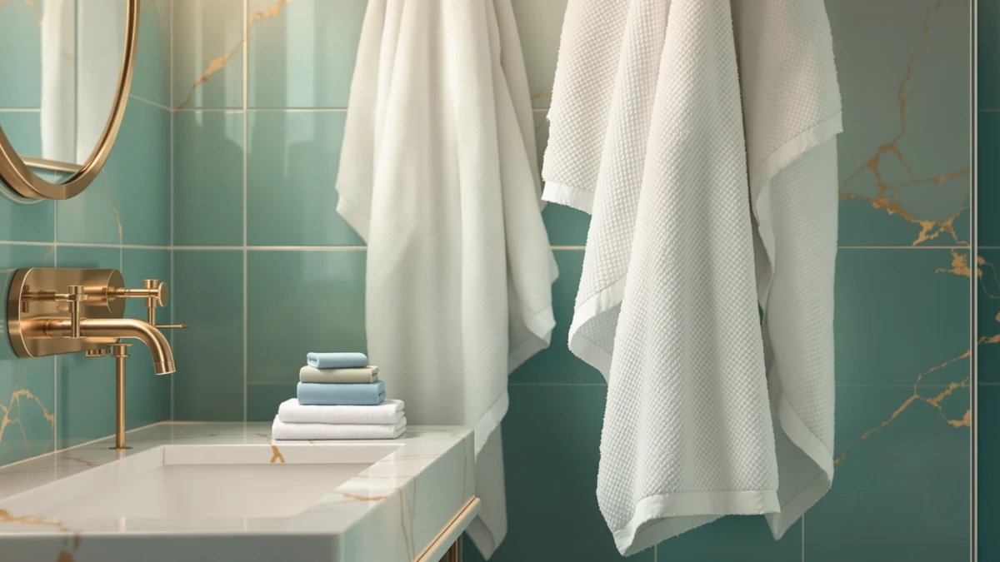

Bath Towels vs Bath Sheets Size: Which Is Better? (2026)
Prices and picks verified as of October 2026. Independent, reader-supported reviews.


Things to Know Before You Buy
- A standard bath towel measures about 27 by 54 inches, while a bath sheet typically runs 35 by 60 inches or larger, adding a foot or more of coverage on each side.
- Bath sheets absorb more water per use but take longer to dry between showers, especially in a humid bathroom with limited air flow.
- Most hotels switched to bath sheets years ago because a single sheet wraps a full-grown adult without doubling back, unlike a regular towel.
- A heavier bath sheet in 600 to 800 GSM cotton costs more per piece and takes up more room in a linen closet and washing machine than a standard towel.
- Households with small bathrooms or compact stacked washers often stick with towels because sheets can overload a standard-capacity machine.
Bath towels vs bath sheets size is the first question most shoppers hit when they open a towel aisle, because the two options look similar folded on a shelf but behave completely differently once they're wet and wrapped around a body. A bath towel is built for quick drying and easy storage, while a bath sheet trades compactness for a larger, warmer wrap that covers you from shoulder to ankle in one pass.
Picking between them matters more than it sounds, since the wrong size can mean a towel that doubles back awkwardly on a tall adult or a bath sheet that overwhelms a small bathroom's storage and laundry routine. This guide breaks down the actual dimensions, the fabric weights that drive comfort and drying time, and which households get more value from each format, using specs, pricing and verified owner reviews rather than a single opinion.
Quick Answer
For most adults, a bath sheet wins on comfort: the extra 8 to 16 inches in each dimension means full coverage without re-wrapping, and shoppers comparing bath towels vs bath sheets size usually end up buying sheets once they've tried one. Smaller bathrooms, compact washers, or anyone who wants towels to dry fast between uses should stick with standard bath towels instead. The RIVERSIDE Pack of 2 Extra Large Bath Sheets delivers that larger format at the lowest price in this comparison, at $38.99 for two.
What is Bath Towels?
A standard bath towel measures roughly 27 by 54 inches, a size that has stayed consistent across most US retailers for decades. Cotton weight usually falls between 400 and 600 grams per square meter, which determines how plush and absorbent the fabric feels against skin. At that size, one towel covers an adult's torso and legs but rarely wraps all the way around without tucking or holding an edge in place.
The appeal of a bath towel comes down to practicality rather than luxury. A smaller surface area dries faster on a towel bar between showers, takes up less room in a linen closet, and fits two or three to a standard washer load without overloading the drum. Families with multiple bathrooms and daily laundry cycles often default to towels because they cycle through the wash faster and cost less per piece to replace when they wear out. For a household comparing bath towels vs bath sheets size on a tight budget, standard towels remain the more economical starting point.
What is Bath Sheets Size?
A bath sheet typically measures 35 by 60 inches at the small end and can run as large as 35 by 70 inches, the size used by the RIVERSIDE, Impressions, Maisonette Loft and Superior Heritage sets in this comparison. That extra foot or more in each direction lets the fabric wrap fully around an adult's body in one motion, with enough overlap to tuck at the chest or waist without a second towel.
Cotton weight on bath sheets runs heavier too, often 600 to 800 grams per square meter, which adds warmth and absorbency but also adds drying time. Hotels and spas switched to bath sheets specifically because one piece replaces what used to take a hand towel and a bath towel together. Anyone sizing up from towels to sheets should expect roughly 30 to 50 percent more fabric, which changes storage, laundry and price math in equal measure.
Head-to-Head: Build Quality & Durability
Build quality between these two formats comes down to gram weight and cotton source more than the towel-versus-sheet distinction itself. The Impressions Luxury Heavyweight Egyptian Cotton bath sheets use 800 GSM fabric, among the heaviest in this lineup, which translates to a denser weave that owners report holds up through more wash cycles before the loops start thinning. The RIVERSIDE set runs lighter at 600 GSM, still durable but noticeably less dense in hand.
Because a bath sheet carries 30 to 50 percent more fabric than a bath towel, any weak spot in the weave shows up faster under the extra weight and water load. Maisonette Loft and Superior Heritage both use 100% Egyptian cotton construction aimed at that heavier-use scenario, and reviewers consistently note that Egyptian cotton's longer fiber staple resists pilling better than shorter-staple cotton blends over repeated washing. When build quality decides a bath towels vs bath sheets size comparison, the heavier GSM sheets generally outlast standard towels fiber for fiber, but only if the household owns a washer large enough to clean them without excess friction.
Head-to-Head: Price & Value
Price scales almost directly with fabric weight and surface area. RIVERSIDE's bath sheets sell for $38.99 for two, among the cheapest bath sheets in this comparison, while the 800 GSM Impressions sets run $90.90 for two, more than double. Maisonette Loft sits in between at $67.35, and Superior Heritage comes in at $42.99, both using Egyptian cotton without the heaviest GSM rating.
Standard bath towels avoid that premium almost entirely, since less cotton per piece keeps manufacturing costs down. For shoppers weighing bath towels vs bath sheets size purely on cost per use, towels win on sticker price, but sheets in heavier GSM builds often last longer, which narrows the real cost gap over several years of ownership.
Head-to-Head: Use Experience
Day-to-day use is where the size difference actually shows up. Wrapping in a bath sheet after a shower means one continuous motion, chest to knee, with no second towel needed for shoulders or hair. Owners report that the extra fabric also traps more body heat right after a shower, which matters in a cold bathroom in winter. A standard bath towel asks you to choose between covering your torso or drying your hair and legs separately, and some people prefer that split because it's faster to use and faster to hang back up.
Storage and laundry routine change with the switch too. A bath sheet needs a larger hook or bar, folds into a bigger stack in the linen closet, and can push a standard top-load washer close to its weight limit if you wash more than two or three at once. Anyone who travels with towels will also notice that bath sheets pack heavier and bulkier into a bag than standard towels. Daily users weighing bath towels vs bath sheets size for frequent washing should account for that extra bulk before switching their entire household over.
When to Choose Bath Towels
Choose standard bath towels if your bathroom has limited storage, a compact or stacked washer, or if multiple people share one machine for laundry throughout the week. Towels dry faster between uses, which matters in a household running two or three showers back to back each morning. They also cost less to replace, so guest bathrooms and rental properties that go through towels quickly benefit from the lower price per piece.
Towels make sense too if you prefer separating the job of drying your body from drying your hair, since a smaller towel is easier to wring out and hang on a hook without draping awkwardly. For budget-driven shoppers settling the bath towels vs bath sheets size question, standard towels remain the lower-risk, lower-cost choice.
When to Choose Bath Sheets Size
Choose bath sheets if you want hotel-style coverage, have a taller household member who outgrows standard towel dimensions, or like the warmth of wrapping in more fabric right after a shower. The RIVERSIDE, Impressions, Maisonette Loft and Superior Heritage sets in this comparison all fall in the 35 by 70 inch range that covers a full-grown adult without tucking or re-wrapping.
Bath sheets also suit anyone upgrading a primary bathroom's feel without a full renovation, since the heavier GSM cotton reads as more premium on a towel bar than a standard towel. Households with a full-size washer and enough linen closet depth get the most out of this side of the bath towels vs bath sheets size decision, since the larger fabric needs the capacity to wash and store properly.
Our Top Picks
These three bath sheets illustrate the oversized end of the bath towels vs bath sheets size comparison, each using a different cotton weight and price point to show what the extra size actually costs.

Editor's Pick
RIVERSIDE Pack of 2 Extra
The lowest price in this comparison for a true 35 x 70 inch bath sheet, with 600 GSM ring-spun cotton that owners describe as soft without the premium cost of Egyptian cotton.
$38.99
Check Price on Amazon
Best Value
Impressions Luxury Heavyweight Egyptian Cotton
800 GSM Egyptian cotton puts this set at the heavy, absorbent end of the bath sheet category, and reviewers consistently note it holds up better over repeated washing than lighter-weight alternatives.
$90.90
Check Price on Amazon
Premium Choice
Impressions Luxury Heavyweight Egyptian Cotton
Identical 800 GSM Egyptian cotton construction to the chocolate colorway, aimed at buyers who want the heaviest, most absorbent bath sheet on this list in a navy finish for a primary bathroom.
$90.90
Check Price on AmazonWhat size is a bath towel compared to a bath sheet?
A standard bath towel measures about 27 by 54 inches, while a bath sheet runs 35 by 60 inches at minimum and often reaches 35 by 70 inches, adding roughly a foot of fabric in each direction.
Can a bath sheet fit in a standard washing machine?
Yes, but capacity matters more than with towels.
Frequently Asked Questions
What size is a bath towel compared to a bath sheet?
Can a bath sheet fit in a standard washing machine?
Are bath sheets worth the extra cost over regular towels?
Do bath sheets take longer to dry than bath towels?
Is Egyptian cotton better than ring-spun cotton for bath sheets?
Final Verdict
The bath towels vs bath sheets size decision ultimately comes down to how much fabric your bathroom routine can support: towels for speed, storage and cost, bath sheets for full-body coverage and a heavier, more absorbent wrap. Among the bath sheets compared here, RIVERSIDE's Pack of 2 Extra Large Bath Sheets delivers the format's core benefit, that extra 35 x 70 inch coverage, at the lowest price of the group. For most households weighing both formats, washer capacity and linen closet space will matter more than the brand on the label.